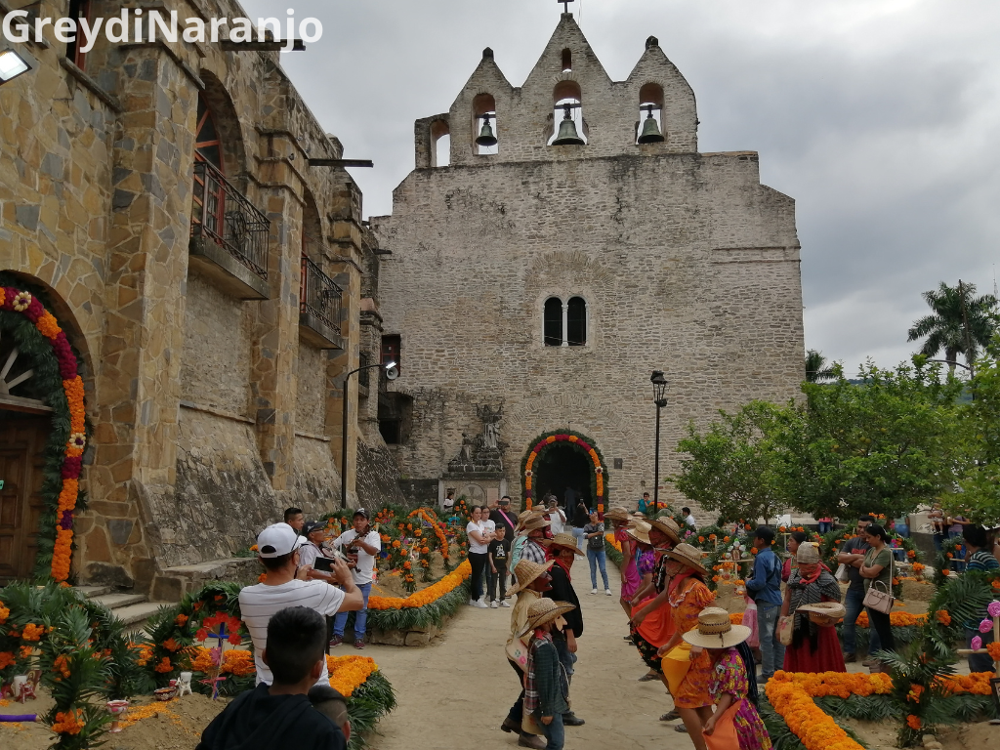

Donde crecí y donde se respira bonito
Publicado por Arturo | Categoría: Mi tierra, familia y recuerdos
Mi rancho
Yo soy de un lugar rodeado de cerros, caminos de tierra y muchas plantas. No es el lugar más famoso del mundo, pero para mí tiene algo especial. Después de pasar horas frente a la computadora, se siente bien salir y ver algo que no sea código.

Las cosas que más recuerdo
Lo mejor de vivir por aquí son las tardes tranquilas, las visitas con la familia y las salidas que empiezan sin planear mucho. Normalmente terminamos caminando, comiendo algo o tomando fotos que después se quedan olvidadas en el teléfono.
- Xantolo: Una fiesta que cambia por completo el ambiente de los pueblos y llena todo de música, flores y comida.
- Los paseos: Caminar por los cerros, conocer ríos y buscar lugares donde todavía no hay señal.
- La comida: Enchiladas con cecina, bocoles y cualquier cosa hecha en comal. En esto sí me considero experto.
- La gente: Las reuniones con Jessica, Rebeca, Lary y Diego, aunque casi siempre alguien termina llegando tarde.
Un lugar para desconectarme
Leer una pequeña historia del camino
Cuando subimos a las partes altas de los cerros se alcanza a ver todo el valle. Si ha llovido, los arroyos hacen ruido durante todo el camino y normalmente terminamos regresando con los zapatos llenos de lodo. Aun así, vale la pena.